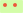
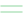

Aussichtspunkt, Kulturobjekt
Kultur- / Einzelobjekt | |
 | Aussichtspunkt |
Kommunaler Richtplan (rechtskräftig)
Der kommunale Richtplan behandelt alle für die räumliche Entwicklung der Stadt wesentlichen Aspekte wie Siedlung, Freiraum und Mobilität. Er ist hier verfügbar.
Der kommunale Richtplan ist ein behördenverbindliches Steuerungsinstrument. Verbänden, Planungsfachleuten und Privaten dient er als Orientierung. Er ist nicht parzellenscharf.
Die Stadt Winterthur ist für die kommunalen Inhalte verantwortlich. Übergeordnete Festlegungen liegen im Zuständigkeitsbereich des Kantons bzw. der Region.
Stand: Festsetzung vom April 1998 mit Änderungen bis zum 27. Mai 2016.
Der kommunale Richtplan wird gegenwärtig revidiert. Weitere Informationen finden Sie hier oder im Stadtplan (Kommunaler Richtplan (in Revision)).
Gleisanschluss, Siedlung Grienen
bestehendes Gebiet mit Gleisanschluss | |
geplantes Gebiet mit Gleisanschluss | |
Siedlung Grienen |
Aussichtspunkt, Kulturobjekt
Kultur- / Einzelobjekt | |
| Aussichtspunkt |
Aussichtslage, Gewässerabstandslinien, empfindlicher Siedlungsrand, Schlittelabfahrt
Aussichtslage | |
bestehende Gewässerabstandslinie | |
geplante Gewässerabstandslinie | |
empfindlicher Siedlungsrand | |
Schlittelabfahrt |
Umgebungsschutzgebiet
 | Freihaltegebiet |
Zentrumsfunktion
Zentrumsgebiet |
Landschaftsförderungsgebiet, Materialablagerung und -gewinnung
 | Landschafts-Förderungsgebiet |
Gebiet für Materialgewinnung | |
Gebiet für Materialablagerung | |
Hinweisbereich |
Grundnutzung
 | Baugebiet für Wohnen |
Baugebiet für Wohnen und Arbeiten | |
 | Baugebiet für Arbeiten |
 | Schutzwürdiges Ortsbild, Weiler |
 | Landwirtschaftsgebiet |
 | Erholungsgebiet E1/E2 |
Naturschutzgebiet | |
Rebschutzgebiet | |
 | Wald |
 | Gewässer |
Verkehrsfläche |